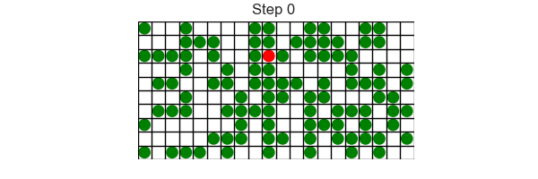
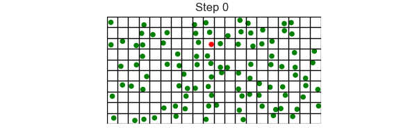

The agent based model implementation of SIR divides the population in three components — as in the continuous model — Susceptible, Infected, and Recovered. In the agent based model the component is represented as the Agent.state.
Each individual is represented as an agent and the state of each agent changes over time based on the interactions between agents:
mesa.space.MultiGrid, instead of mesa.space.SingleGrid.density. (Later in the simulation, as agents move there can be multiple agents in a single location.)state of SUSCEPTIBLE, INFECTED, or RECOVERED.get_neighborhood method that returns the list of neighbouring cells.step method that implements the following rules:INFECTED, it will infect any susceptible agents in the same location with probability pr_infect.INFECTED, it will recover with probability pr_recover.pr_move, to a random neighbouring cell each step.Agent and ModelAgent classstate of SUSCEPTIBLE, INFECTED, or RECOVERED.get_neighborhood to return a list of all neighboring cells.step to compute its behaviour based on its state and the state of its neighbours.1 2 3 4 5 6 7 8 9 10 11 12 | |
Model classThe Model class stores the model parameters,
the model geometry (space/grid),
and the agents in the model.
The basic structure of this class is
1 2 3 4 5 6 7 8 9 10 11 12 13 14 15 16 | |
Agent classThe get_neighborhood method:
get_neighbors method defined in the Game of Life and other models, but calls the method grid.get_neighborhood in place of grid.get_neighbors.
What is the difference? Well get_neighbors returns a list of agents in the neighbourhood, while get_neighborhood returns a list of grid locations in the neighbourhood. We need to locations to pick one to move to when updating.The step method has the following rules:
The agent moves to a random neighbouring cell with probability pr_move. To do this:
model.pr_move to determine if the agent should move.self.get_neighborhood.np.choice.If an agent is INFECTED, then it can infect each SUSCEPTIBLE agents in the same location (if they exist) with probability pr_infect.
If an agent is INFECTED, then it can recover with probability pr_recover.
We could implement these rules fully, but instead we will implement them step by step and examine progress.
Model classThis is implemented along similar lines to the Fire Model or the Schelling Model:
In Model.__init__:
SingleGrid with MutliGridSUSCEPTIBLE)INFECTED.In Model.step:
To start, the function draw_model is near identical to the Schelling Model function. use
colours and labels:
1 2 | |
Then creating a model and displaying it using
1 2 3 | |
should result in the following

This is OK, but what happens when multiple agents are in the same grid location? How can we see multiple agents since we will only see the last one drawn.
There are a number of fixes for this. The easiest of these is to draw smaller agents and give each agent a random offset (from the centre). This works, but we want to be careful of two things:
There is a solution to both of these issues:
Model._init__ create a separate random number generator that will be only used for visualisation. Here I used default_rng which I imported from numpy.random.1 | |
Agent.__init__ give it a random offset1 | |
draw_model, change the radius to 0.2 and change pos from 1 | |
to
1 | |
This results in the following

Agent update rules in separate versionsINFECTED agent movementAdd movement to the agent that is INFECTED only. Use grid method move_agent.
By moving just the single INFECTED agent it is easier to verify that the correct behaviour is implemented.
TEST: When you run simulation only the INFECTED agent show move and only move from grid location to neighbouring grid location.
Now modify the agent.step method so that all agents move.
TEST: Now all agents should be moving. Lower density value so easier to track each agent to verify movement.
When updating an INFECTED agent we need to see if they infect any SUSCEPTIBLE agents who are sharing their current grid location. To do this:
get_cell_list_contents which returns a list of agents in the specified grid location.SUSCEPTIBLE with probability py_infect.TEST: Now infection should spread as agents move around the grid.
An infected agent recovers with probability pr_recover, changing state from INFECTED to RECOVERED.
TEST: Now infection should spread but over time the infected are replaced by recovered.
NOTE: Finally check the order of your actions in agent.step we want the move to be the last action carried out.
Next add the data collection (similar to Fire Model and Schelling Model). And generate plots similar to the fire model to investigate the impact of the model parameters
pr_infect and pr_recover. These parameters play a similar role to the Fire model parameters pr_spread and pr_burnout, and play a similar role to the continuous SIR model parameters beta and gamma.
Generate generate plots similar to the fire model to investigate the impact of the model parameters.
Modify the model so that it includes state DEAD. This gives use the SIRD model and is implemented using:
DEAD.pr_die. Agents that are infected now recover with probability
pr_recover*(1-pr_die) and die with probability
pr_recover*pr_die. This is so the parameters pr_die works similar to the parameter mu in the continuous SIRD model (Task 1). DEAD agent does not die and the simplest approach is not display them in draw_model.One advantage of the agent based model approach for disease spread is that it is easy to add effects of social distancing. One approach is to add another parameter, say pr_isolate, which when state is INFECTED the agent does not move with probability pr_isolate. This probability check is applied inside the probability check self.random.random()<self.model.pr_move.
Then using data collector and batch runner generate plots to show the impact of pr_isolate.